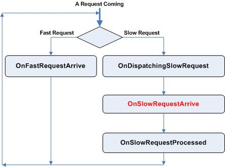

Tutorial Three
Contents
1. Brief introduction and what we’ll achieve in this tutorial
We have already demonstrated a lot of features of SocketPro in the
first two tutorials so far. We are going to show you a few new advanced
features with this tutorial.
First of all, we are going to create a new service that provides
a center memory data store to hold a lot of items shared by many clients.
Technically, the data center is a stack that the last item input should be
first out. A client may send one, a few, or a lot of items in one unit into
this center store. Also, a client
may ask for one, a few, or many
items from the central memory data
store. One particular requirement is that all of items from one client
at a moment must be stored in one unit and can’t be mixed and must be separated
with other items from other clients at a moment in some way.
In addition, the distributed application must also support the service of the previous tutorials one and two, but a client can establish only one socket session to the server.
Therefore, you are expected to know the following aspects after you go
through this tutorial:
1. How to serialize or de-serialize a
complicate data structure in SocketPro.
2. How to switch for different services at
runtime because the application requires one socket connection per client.
3. How to exchange a large collection of
data between client and server with excellent data movement speed because the
service is involved with sending or getting many items to or from a remote
SocketPro server.
4. How to reduce the number of synchronized
data members to make server code simpler with much better code readability.
5. How to reduce latency and increase
client user interface response.
2. Item that will be exchanged between client and server
Here is a data structure for an item. We may send one item, 5000, 500000 items, or even more within one request.
public class CTestItem
{
public DateTime
m_dt;
public long m_lData;
public string m_strUID;
}
3. Universal interface definition
Here is the universal interface definition file that will be used to create skeleton for both client and server.
[
ServiceID = 10 //service id can't be less than 0
]
CTThree
{
//Get one item from server
CTestItem GetOneItem();
//Send one item to server
void SendOneItem(in CTestItem Item);
$void GetManyItems(in int nCount);
void SendManyItems();
}
Note that the request GetManyItems is specified to be slow with the special char $. The request SendManyItems is supposed to be a slow request with an input for the number of items, but it is not indicated with the special char $ as a slow request. We’ll manually change the request onto slow one. At this moment, we just think that the universal definition file is correct without problems.
Handle complicated data structure within SocketPro -- If you create the skeleton code from the tool uidparser.exe and insert codes into client and server projects, you may meet compiling problem for both C++ and C#. For VB.NET, you will not meet any compiling problem in most cases. If you check code, you will find the tool correctly write code at the beginning with correct calling sequence and logic. However, the skeleton code does not run correctly. If you run it, you will get exception complaining serialization or de-serialization problems in .NET. In C++, you will get assert problems. All of these problems indicate we need to do some works for the generated code. Indeed, this behavior is expected with the current version of the tool uidparser.exe. The reason is that currently the tool uidparser.exe is not smart enough to handle a user defined data structure just because a user defined data structure can be very complex. The good news is that the tool is able to automatically indicate the potential problem for you as shown in the below from the function protected override void OnFastRequestArrive(short sRequestID, int nLen) (see the file TThreeImpl.cs).
m_UQueue.Push(GetOneItemRtn); /*Please implement IUSerializer for the
class!!!*/
m_UQueue.Pop(out Item); /*Please implement IUSerializer for the class!!!*/
The tool reminds you to keep eyes on the generated code to check if the generated code is correct. Now, let’s modify the class for the item so that we can serialize or de-serialize from a memory queue as show in the below.
public class CTestItem : IUSerializer
{
public CTestItem()
{
m_dt = System.DateTime.Now;
}
public void SaveTo(CUQueue UQueue)
{
object obj = m_dt;
UQueue.Push(obj); //save datetime as native VARIANT datetime so that the code can also work with C++ code
UQueue.Push(m_lData);
UQueue.Save(m_strUID);
}
public int LoadFrom(CUQueue UQueue)
{
int nLen;
object obj = null;
nLen = UQueue.Pop(out obj);
m_dt
= (DateTime)obj;
nLen += UQueue.Pop(out m_lData);
nLen += UQueue.Load(out m_strUID);
return nLen;
}
public DateTime m_dt;
public long m_lData;
public string m_strUID;
}
The new class implements a pre-defined interface IUSerializer in SocketProAdapter. It is
recommended that you implement the interface although it is not required. After completing the above
modification and use the methods SaveTo and LoadFrom to replace the methods
Push and Pop for the item, respectively, the code will run just fine for the
requests SendOneItem and GetOneItem. If you don’t want to manually pack and
unpack the data item like the above,
you can use .NET serialization
instead if you indicate the item is serializable. Note that
CUQueue fully supports
serializing objects by use of
.NET mechanism. The uidparser.exe is good with simple data types without your input for generated code.
As you can imagine, it may
require your efforts for a
user defined data structure
because the data structure can be very complex. However, the
modification is not really difficult at all as shown in this tutorial. It is pointed out that the data
serialization sequence should be equal to the data de-serialization sequence as
show in the above. Otherwise, you may get en exception for bad serialization.
4.
Plug the service into an existing server application
Now you can plug this service onto the tutorial one or two server application. First of all, add two new files TThreeImpl.cs and TThree_i.cs into the server application. Modify the function CMySocketProServer::AddService like below:
private void AddService()
{
bool ok;
//No COM -- taNone; STA COM -- taApartment; and Free COM --
taFree
ok
= m_CTOne.AddMe(TOneConst.sidCTOne, 0, tagThreadApartment.taNone);
//If ok is false, very possibly you have two services with
the same service id!
ok
= m_CTOne.AddSlowRequest(TOneConst.idSleepCTOne);
//copy these lines of code from TThreeImpl.cs
//No COM --
taNone; STA COM -- taApartment; and Free COM -- taFree
ok
= m_CTThree.AddMe(TThreeConst.sidCTThree, 0, tagThreadApartment.taNone);
//If ok is false, very possibly you have two services with
the same service id!
ok =
m_CTThree.AddSlowRequest(TThreeConst.idGetManyItemsCTThree);
ok
= m_CTThree.AddSlowRequest(TThreeConst.idSendBatchItemsCTThree);
}
Add two request ids into the file TThree_i.cs manually as shown in the following. The two request ids are for two slow requests. We’ll use them later.
public const short
idGetBatchItemsCTThree = (idSendManyItemsCTThree + 1);
public const
short idSendBatchItemsCTThree = (idGetBatchItemsCTThree
+ 1);
Also, we need to add one instance CTThreeSvs into CMySocketProServer class like the following.
private CTThreeSvs
m_CTThree = new CTThreeSvs();
Remove the new copy CMySocketProServer in the file TThreeImpl.cs. At this time, you can compile the server application and run it again.
5. Plug the service into an existing client application
At client side, you just add two file TThree.cs and TThree_i.cs into client project. Also, add the following code for creating an instance of CTThree at client side.
private CTThree
m_S3Handler = new CTThree();
Of course, we need to attach the client service handler with an instance CClientSocket as shown in the below.
m_S3Handler.Attach(m_ClientSocket);
Now, we have two instances of asynchronous handlers attached into one instance of CClientSocket. We can add a set of new GUI controls into existing window form and complete coding as shown in the attached sample to prepare for demonstrating the new service.
SocketPro supports multiple services within one socket connection. You can use the method IUSocket::SwitchTo at run time to ask for a new service. Here is a snippet of code to show you how to do it.
private void btnGetOneItemFromServer_Click(object sender, System.EventArgs
e)
{
if(m_ClientSocket.GetCurrentServiceID() != m_S3Handler.GetSvsID())
{
m_ClientSocket.SwitchTo(m_S3Handler);
}
string str = null;
m_lPrev
= m_PerfQuery.Now();
CTestItem
Item = m_S3Handler.GetOneItem();
str +=
m_PerfQuery.Diff(m_lPrev);
txtTimeRequired.Text
= str;
}
At this time, you can compile client
application and connect it to a remote SocketPro server application. It will
run without any problem with requests of the first service. However, when you
click a window control that leads to sending a request with the new added
service, the remote server will immediately close socket connection. This
behavior is indeed expected because SocketPro always asks for client
credentials for authentication by default. For switching to a new service, by
default SocketPro server will close a socket connection if you forget sending
client credentials (user id and password). To solve this “problem”, you can set
the property CSocketProServer.Config.SharedAM to true before starting listening socket at
server side. As expected for the sake of security, you still have to send
client credentials for the very first switch. Once you set the above property
to true at server side, you can switch for new service at your will without
re-sending client credentials again.
7.
Strategies for exchanging large objects or large set of items
Problems with large objects or large sets
of items – You can use whatever a technique to exchange small object or
a few items easily between two machines. Performance or scalability will not
bother you at all. However, when exchanging a large object or large set of
items, it is another story. First of all, you may get out of memory exception
with many common techniques. You can do Internet search to verify this
statement. You have to do special treatments with lots of code. The second
problem is usually very slow. It takes a long time or long latency to get
response because window user control has no way to be updated during fetching
data. If you have to exchange these large data over WAN networks (phone, DSL
and cable modems), your application will run like a snail, and practically it
is useless to a user. The third problem is that a server application is not
scalable because it supports only a few clients for processing requests
simultaneously. Once you just have a few more clients connected, a server will
refuse new connections, or throw out memory exception or something else. At
client side, a client application will have the same set of problems. The
fourth problem is that you have to use threads everywhere at both client and
server that lead to a set of new nasty problems, thread contention, data
synchronization and dead locks. Because window user controls are not
multithreaded-ready, you also have to get some ways to update window user
controls from worker threads. To combat exchanging large object or large set of
items, you have to write tons of code that can be only understood by you and not by others. Probably
nobody else knows how the tons of code work behind. Debugging and maintaining
multithreaded code is not an easy job!
A perfect solution to large objects or large set of items – In the above paragraph, we have pointed out a lot of potential problems in exchanging large objects or large set of items. SocketPro has a very understandable way to solve these problems in an absolutely perfect way through 100% non-blocking socket. Now let’s see how to solve above problems with real code.
At server side, SocketPro server sends a large set of items to a client by dividing a large set into a number of small sets using the following code except from CTThreePeer in the file TThreeImpl.cs.
protected void GetManyItems() //move many items from
server to a client
{
int nRtn = 0;
m_UQueue.SetSize(0);
while (m_Stack.Count > 0)
{
CTestItem Item = (CTestItem)m_Stack.Pop();
m_UQueue.Push(Item);
//20 kbytes per batch at
least
//also shouldn't be too large.
//If the size is too large, it will cost more memory resource
and reduce conccurency if online compressing is enabled.
//for an opimal value, you'd better test it by yourself
if (m_UQueue.GetSize() > 20480)
{
nRtn = SendResult(TThreeConst.idGetBatchItemsCTThree,
m_UQueue);
//a client may either shut down the socket connection or call
IUSocket::Cancel
if (nRtn == SOCKET_NOT_FOUND || nRtn ==
REQUEST_CANCELED)
break;
else
m_UQueue.SetSize(0);
}
}
if (m_UQueue.GetSize() > sizeof(int)
&& nRtn != SOCKET_NOT_FOUND && nRtn != REQUEST_CANCELED)
nRtn
= SendResult(TThreeConst.idGetBatchItemsCTThree,
m_UQueue);
}
The above code also monitors the
special request Cancel from a client or network shutdown event within a worker
thread, because a client user may want to terminate fetching items from server.
Once a client stop asking for items by closing a socket or sending a special
request Cancel, the server application can elegantly break out the cycle and
stop fetching items. The above code snippet is small and elegant to solve all
of the previously mentioned problems at server side. You can’t easily find a
better way to solve the same challenging request from anywhere else. The above code is so simple but
SocketPro automatically take cares of many hard works for you even though you
don’t know these hard works at all.
Let’s see how to send a large set of items from a client to a server. At client side, the code is except from CTThree class in the file TThree.cs. There are three pieces of code snippets here.
public void SendManyItems(Stack
outStack)
{
m_OutStack = outStack;
SendBatchItems();
WaitAll();
//at last, we inform a server that we finish sending items
bool bProcessRy = ProcessR0(TThreeConst.idSendManyItemsCTThree);
}
private void SendBatchItems()
{
int nBatch = 0;
int nSndSize;
CUQueue UQueue =
GetAttachedClientSocket().GetMemoryQueue();
UQueue.SetSize(0);
nSndSize
= GetAttachedClientSocket().GetUSocket().BytesInSndMemory;
while (nBatch < 200 && nSndSize < 40960
&& m_OutStack != null &&
m_OutStack.Count > 0)
{
CTestItem
Item = (CTestItem)m_OutStack.Pop();
UQueue.Push(Item);
nBatch++;
}
if (UQueue.GetSize() > 0)
{
SendRequest(TThreeConst.idSendBatchItemsCTThree, UQueue);
UQueue.SetSize(0);
}
}
protected override void
OnResultReturned(short sRequestID, CUQueue UQueue)
{
//other code
ignored here for clearance
switch(sRequestID)
{
case
TThreeConst.idSendBatchItemsCTThree:
SendBatchItems();
break;
default:
break;
}
}
At very
beginning, we set a reference to an outside large stack object that may
contains millions of items in the first piece of code. Next, we still divide a
large set of items into a number of small sets of items at client side and send
them in chunks instead of one big chunk in the second piece of code. In the
above code, we send 200 items if SocketPro internal sending memory size is not
over 40K bytes if the stack is not empty. Also, we use the third piece of code
to monitor the previously sent items and send the next batch of items by
calling the function SendBatchItems. Also, we call the method WaitAll to make sure all of
items are sent to a remte SocketPro server. At the last, we use the synchronous method ProcessR0 to inform the remote server that there is no more items to send. Note that we don’t use any worker thread at client
side, but client window controls are not frozen if you exchange items between
two machines with enough CPU power. If your client machine CPU power is low but
network bandwidth is high, the client window may be not very responsive because
client window system can’t dispatch window events due to its limited CPU power.
As long as you use the above two sets of code at client and server sides, you will not meet the famous exception OutOfMemoryException. In addition, we can immediately update client window user controls right after the first batch of items is exchanged as shown in this example (see the sending and receiving bytes changed on client application window form). This greatly reduces latency when dealing with a large object or large set of objects. Because this tutorial already contains many user controls, we don’t want the simple demo form cluttered with too many user controls and the demonstration to improvement of latency is postponed to the tutorial four.
Our remote window file and database
services use the same
approach to solve all of moving large files and large data record set across
machines. For exchanging large size files, see projects UFile and ufilesvr
inside the directory ..\SocketPro\WinFile\. We don’t open server source code
for our remote database service, but we do open client source code in the
project at the directory ..\SocketPro\DataBase\UDB. After analyzing these
codes, you will see that we always use this approach to solve this type of
challenging problems easily and elegantly. As long as you understand this
approach, you will be very confident to conquer any large file, large dataset,
large collection of items, and large whatever.
Another example is that SocketPro is able to exchange .NET ADO.NET
records directly by use of the interface IDataReader, which leads to much
better performance and scalability. As far as we know, there is no other
communication framework in the word which is able to provide similar features!
8. Reduce locked objects as many as possible for less chance to
dead locks
As hinted in the tutorial one, SocketPro
has a way to further reduce the number of static or global variables which must
be locked or synchronized across different threads and connections. SocketPro
is designed with one main thread and support of creating worker threads on the
fly. Many static or global variables do not require to be locked, which leads
to simpler data synchronization. In this tutorial, we can further reduce the
number of static or global variables so that code becomes simpler and simpler.
To help you understand the mechanism, we need to understand how
requests are routed in SocketPro on server side. See the below Figure.

First of all, only the virtual function OnSlowRequestArrive is called
within a worker thread; and all of others are called from main thread. When a
request comes, SocketPro knows if it is fast or slow one because we list all of
slow requests by their ids (CBaseService.AddSlowRequest) while starting a
server. If a request is fast one, it will be processed directly in main thread.
If the request is slow one, a blocking flag will be set and the virtual function
OnDispatchingSlowRequest called right before the request is sent to a worker
thread for processing. After a slow request is processed, the virtual function
OnSlowRequestProcessed is called and the blocking flag is removed so that
SocketPro keeps on processing the next request.
We can
use the feature to reduce locked objects as many as possible so that coding
multithreaded server applications is eased with much less chance to thread dead
locks and
contentions. Remember that the chance to
thread dead locks
and contentions is very dependent on the
number of locked objects. The more locked objects, the more chance to dead
locks and contentions. As shown in the tutorial one, we don’t use any locking
object for static member CTOnePeer::
m_uGlobalFastCount that is accessed from many socket connections. In this
tutorial, we’ll use the virtual function CClientPeer::OnDispatchingSlowRequest to further reduce the number
of locking objects.
First, we use the below code to
update the static member CTOnePeer::m_uGlobalCount. Remove all of the
CTOnePeer::m_cs and its related code. The implementation of CTOnePeer is considerably
simplified because all of data synchronization is removed in comparison to its
original implementation in tutorial one.
protected override void
OnDispatchingSlowRequest(short sRequestID)
{
m_uGlobalCount++;
}
The above is a simple case that you may think the feature is not really useful. Let’s use the feature to get rid of locking object for the CTThreeSvs::m_Stack that will be accessed from the main thread only. If SocketPro server does not have this feature, we would have to use a locking object for synchronizing the memory data store everywhere. Here is the code.
protected override void
OnDispatchingSlowRequest(short sRequestID)
{
if(sRequestID == TThreeConst.idGetManyItemsCTThree)
{
int nCount = RetrieveCount();
m_Stack.Clear();
while (m_TThreeSvs.m_Stack.Count > 0 &&
nCount > 0)
{
m_Stack.Push(m_TThreeSvs.m_Stack.Pop());
nCount--;
}
}
}
The above code just clears a CThreePeer::m_Stack
first when a client sends
the request GetManyItems. Afterwards, it moves a number of required items from
CTThreeSvs::m_Stack into a CThreePeer::m_Stack by changing references to items.
This step is fast though. When the virtual function CTThreePeer::OnSlowRequestProcessed is called,
we call the function GetManyItems within the
worker thread as shown in the below:
protected override int
OnSlowRequestArrive(short sRequestID, int nLen)
{
switch(sRequestID)
{
case
TThreeConst.idGetManyItemsCTThree:
M_I0_R0(GetManyItems);
break;
case TThreeConst.idSendBatchItemsCTThree:
M_I0_R0(SendBatchItems);
break;
default:
break;
}
return
0;
}
If a client sends a lot of items to a server, the client actually sends items in a set of small batches of items that is processed within a worker thread. Note that all of sent items are temporarily stored in CTThreePeer::m_Stack instead of CTThreeSvs::m_Stack.
protected void SendBatchItems()
{
while(m_UQueue.GetSize() > 0)
{
CTestItem Item;
m_UQueue.Pop(out Item);
m_Stack.Push(Item);
}
}
At last, when a client completes sending, the client will sends a fast request SendManyItems to inform the server that sending items is completed. We can move all of items from CTThreePeer::m_Stack into CTThreeSvs::m_Stack as shown in the below. This step is also fast!
protected void SendManyItems()
{
while(m_Stack.Count > 0)
{
m_TThreeSvs.m_Stack.Push(m_Stack.Pop());
}
}
By this time, you will find that CTThreeSvs::m_Stack shared among many socket connections is accessed only within the main thread. Moving items between a CTThreePeer::m_Stack and the CTThreeSvs::m_Stack is fast, which happens within the main thread. The lengthy processing like SendBatchItems and GetManyItems are completed within a worker thread, which accesses a local instance CTThreePeer::m_Stack. Both client and server applications don’t use any locking objects at all, but applications are highly multithreaded with excellent concurrency.
After carefully
consideration, we can conclude that as
long as we can divide a slow request into two or more sub-requests and anyone
of them is a fast one, we possibly use the above approach to get rid of a data
synchronization object for simplifying development at server side. We
hope you can use this approach to easily write a highly multithreaded server
application with excellent concurrency and maintainable code without using a
single thread locking object!
9. Make sure 100% usage of network bandwidth
SocketPro delivers very high net transferring efficiency. If your network bandwidth is 10 mbps or less, you don’t have to do anything, the network efficiency is 100%, which means that TCP packet can be fully filled with your data without any waste. However, it may not happen if your real network bandwidth between two machines is over 10 mbps, network efficiency may drop mainly because MS window operation systems have a large timer resolution. However, you can prevent the network efficiency decrease by increasing TCP buffer sizes at both client and server sides.
//Incerasing TCP sending and receiving buffer sizes will help
performance
//when there is a lot of data transferred if your network
bandwidth is over 10 mbps
m_ClientSocket.GetUSocket().SetSockOpt((int)USOCKETLib.tagSocketOption.soSndBuf, 116800, (int)tagSocketLevel.slSocket);
m_ClientSocket.GetUSocket().SetSockOpt((int) USOCKETLib.tagSocketOption.soRcvBuf, 116800, (int)tagSocketLevel.slSocket);
//Incerasing TCP sending and receiving buffer sizes will help
performance
//when there is a lot of data transferred if your network
bandwidth is over 10 mbps
m_ClientSocket.GetUSocket().SetSockOptAtSvr((int) USOCKETLib.tagSocketOption.soSndBuf, 116800, (int)tagSocketLevel.slSocket);
m_ClientSocket.GetUSocket().SetSockOptAtSvr((int) USOCKETLib.tagSocketOption.soRcvBuf, 116800, (int)tagSocketLevel.slSocket);
As shown in the above code, you can easily increase four TCP buffer sizes. The data is 116800 is an estimated value, but it is very predictable. Assuming your network bandwidth is 100 mbps and MS window resolution is 10 ms, the value could be roughly equal to:
(100,000,000 bits * 10) / 1000 / 8 = 125000 bytes
10. Summary
This tutorial is created to tell you how to attack a set of challenging tasks. These tasks include following:
(a) Modify generated code from uidparser.exe so that you can exchange any type of user-defined structures or classes between two machines.
(b) This sample shows you how to use SocketPro for exchanging any large object like DateSet and file, and a large collection of any types of items with the best code.
(c) This sample also shows you how to cancel a long-lasting request from a client by calling the method IUSocket::Cancel without shutting down a socket connection.
(d) This sample tells you how to partition a request across main thread and worker thread so that you use much less locking objects. This particular approach makes developing multi-threaded server applications considerably easier and much more maintainable.
(e) This sample tells you how to use IUSocket::SetSockOptSvr to increase network through output.
(f) This sample demonstrates how to share one socket connection for different services.
Our SocketPro is written with lots of new ideas internally for solving a set of challenge problems. This design focuses tough and challenge problems that every developer will meet for real industrial applications. It is not for toy applications. At start, maybe you don’t like this design, but we wish this tutorial is able to catch your attention.
11. FAQs:
a. After looking at your sample code and comparing it with code from other frameworks, it seems to me that SocketPro requires more code/typing on client side to process all of return results. Is it the downside of SocketPro?
The first reason is that SocketPro is written from asynchrony computation. By asynchrony computation definition, it sends a request first and processes its return result later so that we must use two methods to complete a remote method call. Naturally, it causes more typing and coding in comparison to synchrony computation. You can verify it with all of other remoting frameworks too. However, relatively we believe our SocketPro is much simpler and requires much less typing and coding. The second reason that we haven’t developed a true asynchronous proxy like a proxy for synchrony yet. At the moment, you can think CAsyncServiceHandler is an asynchronous proxy on client side and CClientPeer is a stub/proxy on server side.
The latest version of SocketPro adapters have be improved to take
advantage of anonymous delegates or Lambda expression so that asynchrony
computing has been already simplified significantly.
b. I have worked with a number of remote frameworks. At the very beginning, I play some simple examples like hello world sample. It looks great at the very beginning for some remote frameworks, but it turns out very badly at the end after careful study. Does SocketPro have any hidden problems that UDAParts doesn’t want us to know?
As far as we know, SocketPro has no hidden problems at the moment. However, it doesn’t mean that our SocketPro is perfect. We are truly welcome to your feedbacks and suggestions. Should you have one, please let us know either privately or publicly. We’ll try our best to keep on improving SocketPro. The improvement is dependent on not only UDAParts but also you.
c. When will UDAParts complete SocketPro? When can I use SocketPro for my development?
At this moment, you can use SocketPro for your development certainly. In regards to the time that UDAParts completes SocketPro, it may require more time to keep on improving it. There is no time frame to complete SocketPro at all. We’ll add more and more features into SocketPro package.
d. Can I further improve the performance for this tutorial sample?
Yes! You can increase the performance for local host and a remote host running on fast LAN (for example 100 mbps or faster). Here are two hints to improve the performance at least 100%. First, use 100% asynchrony computation without calling CClientSocket::WaitAll/Wait (IUSocket::WaitAll/Wait). This call makes your coding simpler and more manageable, but it does decrease the performance slightly. If your network has a long latency, its side effect doesn’t influence your application performance very much. We just ignore the performance here to simplify these sample codes. Second, you can set ReturnEvents to rfCompleted only, which will reduce the event OnRequestProcessed one time so that the performance is improved somewhat further.